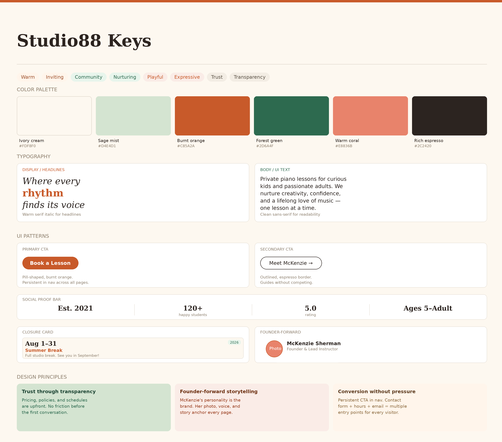

A growing piano studio was losing potential students because clients had no central place to find her schedule or services
McKenzie's studio was growing through word-of-mouth, but a lack of web presence meant prospective families faced high interaction costs just to find basic information. I identified the key drop-off points and redesigned the enrollment journey around transparent pricing and founder-forward trust signals to drive qualified conversions.

The Interaction Cost of Word-of-Mouth
McKenzie's studio was growing, but her administrative load was becoming unsustainable. Without a central web presence, parents faced a high interaction cost: they had to initiate an email chain or social media DM just to learn basic details like pricing or location. This friction led to drop-offs and forced McKenzie to spend hours answering repetitive introductory questions.
She needed a site that could do the heavy lifting of building trust and answering FAQs so she could focus on teaching.
Designing for the Scroll
I treated this project as a series of scrolling narratives. By front-loading the decision-making in Figma, I ensured every interaction was intentional before moving into production.
- Information Architecture: I mapped the vertical flow of each page to ensure a "no-dead-ends" experience. I prioritized a user flow that moves parents from Curiosity (Homepage) to Validation (Tuition/Gallery) to Action (Contact).
- Component-Driven System: I didn't just produce pages, I built a library of reusable components including universal navigation, footer systems, and custom Closure Cards, ensuring 1:1 visual consistency during the Framer build-out.
- Figma-to-Framer Fidelity: I translated high-fidelity comps into a responsive production site. By building with a mobile-first mindset, I ensured the scrolling experience remained smooth and legible on small screens, where vertical space is at a premium.

Wireframe to hi-fi

Every Decision Had a Reason
1. Strategic Visual Pacing
To prevent "scroll fatigue" on a content-heavy site, I used a warm, inviting color palette (Cream, Burnt Orange, Forest Green) to create distinct content chapters. Changing background colors between sections acts as a visual cue that the user has moved into a new category of information.
2. Typographic Hierarchy and Branding
The hero sections use an expressive serif italic to inject personality and movement. I maintained a strict typographic hierarchy, using clean sans-serifs for data-heavy sections like Tuition and Policies to ensure maximum legibility for busy parents.
3. Behavioral Trust Signals
In a service involving children, the primary user goal is seeking safety and competence.
- Founder-Forward Design: I prioritized high-quality photography of McKenzie and her students to humanize the business.
- Social Proof: I designed a Live Studio gallery to showcase real recitals and certificates, which is more persuasive than anonymous testimonials.
4. Operational Maturity via Closure Cards
I designed a dedicated "Upcoming Closures" section with dated cards. This small detail shows operational maturity and proactively answers the number one question current families have, significantly reducing McKenzie's weekly support emails.
5. The Persistent Conversion Path
To ensure the scroll always leads to a result, I implemented a persistent "Book a Lesson" CTA in the navigation. No matter how far down the page a parent travels, the path to enrollment is always one click away.
7 pages delivered
From Admin Fatigue to Operational Autonomy
- Professional Identity: The site positions Studio88 as a premier, modern choice in the competitive DMV music market.
- Reduced Admin Overhead: The website now acts as a 24/7 digital assistant, fielding the "how much" and "when" questions automatically.
- Better Lead Quality: McKenzie now receives inquiries from parents who are already informed, aligned with her policies, and ready to book their first lesson.